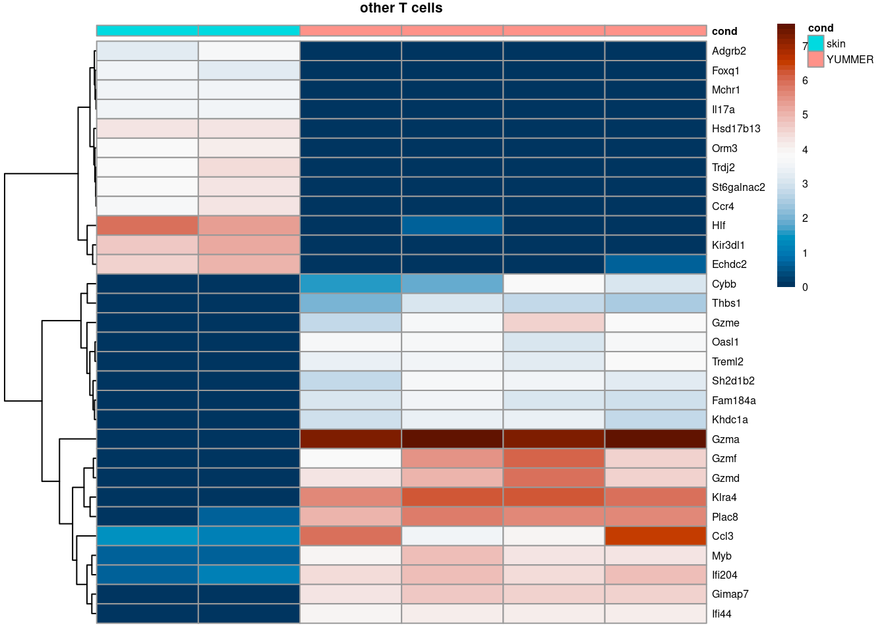

library(scran)
library(dplyr)
library(tidyr)
library(ggplot2)
library(scuttle)
library(pheatmap)
library(patchwork)
library(stringr)
library(Seurat)
library(ggbeeswarm)
library(EnhancedVolcano)
library(SingleCellExperiment)
library(gridExtra)DE tumor CD45
Run Differential expression analysis within LEC subtypes
Standard DE analysis using pseudobulk DE methods (note this differs from the FGCZ default analysis). We want to identify differentially expressed genes within LEC cluster between all groups of skin, YUMMER and YUMM.
Preamble
Code
# volcano plot function as defined in https://github.com/HelenaLC/TLS-Silina/blob/main/code/geo-02-differential.qmd
.volcano <- \(df, title, fdr = 0.05, lfc = 1, select_lab = NULL) {
EnhancedVolcano(df,
x = "logFC", y = "PValue",
FCcutoff = lfc, pCutoff = fdr,
selectLab = select_lab,
pointSize = 1.7, raster = TRUE,
title = title, subtitle = NULL,
lab = rownames(df), labSize = 4,
drawConnectors = TRUE, widthConnectors = 0.5) +
guides(col = guide_legend(override.aes = list(alpha = 1, size = 5))) +
theme_bw(9) + theme(
aspect.ratio = 1,
legend.title = element_blank(),
panel.grid.minor = element_blank())
}
.heatmap <- \(mtx, de_genes, cd, title, fdr = 0.05, n_lfc = 20) {
top <- de_genes %>%
filter(PValue < fdr) |>
slice_max(abs(logFC), n = n_lfc)
mtx_sub <- log1p(mtx[rownames(top),])
if (length(rownames(top)) < 2){
return(print("No de genes"))
}else{
hm <- pheatmap(mtx_sub,
main = title, fontsize = 6,
col = rev(hcl.colors(51, "RdBu")),
scale = "row", show_colnames = FALSE, annotation_col = cd)
hm
}
}Data object
seurat<- readRDS(file.path("..", "..","..","data", "scData_all_tumor_skin.rds"))
# correct condition assignment!!
seurat$cond <- seurat[[]] |>
mutate(
cond = case_when(
str_detect(Sample, "YUMM[0-9]") ~ "YUMM",
str_detect(Sample, "YUMMER") ~ "YUMMER",
str_detect(Sample, "Skin") ~ "skin"
)
) |> select(cond)
#merge cell types
seurat$cell_types <- seurat$ident |>
as.factor() |>
forcats::fct_collapse("monocytes/macrophages" = c("0","1","2","5","6","18","22"),
"DCs" = c("4", "12", "19"),
"CD4 T cells" = c("10"),
"CD8 T cells" = c("7", "16"),
"other T cells" = c("3", "11", "15", "23", "24"),
"endothelial cells/fibroblasts" = c("8", "9", "13"),
"mast cells" = c("14"),
"B cells" = c("21"),
"other" = c("17", "20"))
# check assignment
seurat$sample_pooled <- seurat$Sample |>
forcats::fct_collapse("TumorYUMM1" = c("TumorYUMM1_1A", "TumorYUMM1_1B"),
"TumorYUMM2" = c("TumorYUMM2_1A", "TumorYUMM2_1B"),
"TumorYUMM5" = c("TumorYUMM5_2A", "TumorYUMM5_2B"),
"TumorYUMM6" = c("TumorYUMM6_2A", "TumorYUMM6_2B"),
"TumorYUMMER3" = c("TumorYUMMER3_1A", "TumorYUMMER3_1B"),
"TumorYUMMER4" = c("TumorYUMMER4_1A", "TumorYUMMER4_1B"),
"TumorYUMMER7" = c("TumorYUMMER7_2A", "TumorYUMMER7_2B"),
"TumorYUMMER8" = c("TumorYUMMER8_2A", "TumorYUMMER8_2B"))
#table(seurat$Sample, seurat$cond)
table(seurat$sample_pooled, seurat$cond)
skin YUMM YUMMER
SkinLECs_Leukocytes1 1510 0 0
SkinLECs_Leukocytes2 2351 0 0
TumorYUMM1 0 1250 0
TumorYUMM2 0 3538 0
TumorYUMM5 0 3432 0
TumorYUMM6 0 4647 0
TumorYUMMER3 0 0 1918
TumorYUMMER4 0 0 2676
TumorYUMMER7 0 0 3913
TumorYUMMER8 0 0 4972table(seurat$cond)
skin YUMM YUMMER
3861 12867 13479 # switch to SingleCellExperiment object
sce <- as.SingleCellExperiment(seurat)
saveRDS(sce, "../../../data/sce_tumor_CD45.rds")DE analysis
cond_de <- function(cond1, cond2){
# subset sce
sce_sub <- sce[,sce$cond %in% c(cond1, cond2)]
# creating pseudobulks
summed <- aggregateAcrossCells(sce_sub,
id=colData(sce_sub)[,c("cell_types","sample_pooled")])
# filter min cells
summed.filt <- summed[,summed$ncells >= 10]
print(table(summed.filt$cond, summed.filt$cell_types))
# de
design <- model.matrix(~factor(summed.filt$cond), summed.filt$sample_pooled)
de.results <- pseudoBulkDGE(summed.filt,
label=summed.filt$cell_types,
design=~factor(cond),
coef=ncol(design),
condition=summed.filt$cond
)
}
skin_yumm <- cond_de("skin", "YUMM")
monocytes/macrophages other T cells DCs CD8 T cells
skin 2 2 2 0
YUMM 4 4 4 4
endothelial cells/fibroblasts CD4 T cells mast cells other B cells
skin 2 0 0 2 0
YUMM 4 4 4 4 3#yummer_yumm <- cond_de("YUMMER", "YUMM")
yumm_yummer <- cond_de("YUMM", "YUMMER")
monocytes/macrophages other T cells DCs CD8 T cells
YUMM 4 4 4 4
YUMMER 4 4 4 4
endothelial cells/fibroblasts CD4 T cells mast cells other B cells
YUMM 4 4 4 4 3
YUMMER 4 4 4 0 4skin_yummer <- cond_de("skin","YUMMER")
monocytes/macrophages other T cells DCs CD8 T cells
skin 2 2 2 0
YUMMER 4 4 4 4
endothelial cells/fibroblasts CD4 T cells mast cells other B cells
skin 2 0 0 2 0
YUMMER 4 4 4 0 4#DE skin_yumm
is.de <- decideTestsPerLabel(skin_yumm, threshold=0.05)
summarizeTestsPerLabel(is.de) -1 0 1 NA
DCs 967 4045 876 9862
endothelial cells/fibroblasts 614 5854 899 8383
monocytes/macrophages 792 8356 1277 5325
other 1194 2309 1235 11012
other T cells 1136 5878 1184 7552#DE yumm_yummer
is.de <- decideTestsPerLabel(yumm_yummer, threshold=0.05)
summarizeTestsPerLabel(is.de) -1 0 1 NA
B cells 2 1082 2 14664
CD4 T cells 4 4531 12 11203
CD8 T cells 137 5668 101 9844
DCs 65 6238 193 9254
endothelial cells/fibroblasts 51 5882 54 9763
mast cells 46 2836 81 12787
monocytes/macrophages 772 8401 993 5584
other T cells 23 7210 5 8512#DE skin_yummer
is.de <- decideTestsPerLabel(skin_yummer, threshold=0.05)
summarizeTestsPerLabel(is.de) -1 0 1 NA
DCs 750 6061 502 8437
endothelial cells/fibroblasts 651 6657 879 7563
monocytes/macrophages 806 7251 1135 6558
other T cells 1681 5551 1702 6816#write as output
write_de_res <- function(de_obj, res_nam){
res_list <- lapply(names(de_obj), function(clust, nam = res_nam){
cur.res <- de_obj[[clust]]
res <- cur.res[order(cur.res$PValue),] |>
as.data.frame() |>
filter(!is.na(PValue))
clust_nam <- gsub(" ", "_", clust)
clust_nam <- gsub("/", "-", clust_nam)
## --- adapt path until DE/ to local output path -----##
write.csv(res, paste0("../../../out/DE/tumor_CD45_", nam, "_", clust_nam, ".csv"))
res
})
}
de_skin_yumm <- write_de_res(skin_yumm, res_nam = "skin_yumm")
de_skin_yumm <- write_de_res(yumm_yummer, res_nam = "yumm_yummer")
de_skin_yumm <- write_de_res(skin_yummer, res_nam = "skin_yummer")Plot results
skin vs yumm
#first condition (skin) = baseline, compared to second condition
plot_list <- lapply(names(skin_yumm), \(.) {
df = skin_yumm[[.]]
.volcano(df = df, title = ., fdr = 0.05, lfc = 1)
}
)
wrap_plots(plot_list, nrow = 4) +
plot_layout(guides = "collect") &
theme(legend.position = "top")skin vs yumm selected genes
#first condition (skin) = baseline, compared to second condition
plot_list <- lapply(names(skin_yumm), \(.) {
df = skin_yumm[[.]]
.volcano(df = df, title = ., fdr = 0.05, lfc = 1, select_lab = c("Lyve1", "Cxcl9", "Cxcl10", "Sema3a", "CD112", "Ccl21a", "Reln", "Cxcl12", "H2-Aa", "H2-Ab1", "Cd74", "Ctss", "Ccr2", "Il10", "Alcam", "Esam", "Cd274", "Ifng","Tnfa"))
#.volcano(df = df, title = ., fdr = 0.05, lfc = 1)
}
)
wrap_plots(plot_list, nrow = 4) +
plot_layout(guides = "collect") &
theme(legend.position = "top")
yumm vs yummer
plot_list <- lapply(names(yumm_yummer), \(.) {
df = yumm_yummer[[.]]
.volcano(df = df, title = ., fdr = 0.05, lfc = 1)
}
)
wrap_plots(plot_list, ncol = 2) +
plot_layout(guides = "collect") &
theme(legend.position = "top")
yumm vs yummer selected genes
#first condition (skin) = baseline, compared to second condition
plot_list <- lapply(names(yumm_yummer), \(.) {
df = yumm_yummer[[.]]
.volcano(df = df, title = ., fdr = 0.05, lfc = 1, select_lab = c("Ccr7", "Cxcr3", "Itgam", "Itgal", "Itgb2"))
#.volcano(df = df, title = ., fdr = 0.05, lfc = 1)
}
)
wrap_plots(plot_list, ncol = 2) +
plot_layout(guides = "collect") &
theme(legend.position = "top")
skin vs yummer
plot_list <- lapply(names(skin_yummer), \(.) {
df = skin_yummer[[.]]
.volcano(df = df, title = ., fdr = 0.05, lfc = 1, select_lab = c("Lyve1"))
.volcano(df = df, title = ., fdr = 0.05, lfc = 1)
}
)
wrap_plots(plot_list, nrow = 4) +
plot_layout(guides = "collect") &
theme(legend.position = "top")
skin vs yummer selected cluster 2
#first condition (skin) = baseline, compared to second condition
plot_list <- lapply(names(skin_yummer), \(.) {
df = skin_yummer[[.]]
.volcano(df = df, title = ., fdr = 0.05, lfc = 1, select_lab = c("Lyve1", "Cxcl9", "Cxcl10", "Sema3a", "CD112", "Ccl21a", "Reln", "Cxcl12", "H2-Aa", "H2-Ab1", "Cd74", "Ctss", "Ccr2", "Il10", "Alcam", "Esam", "Cd274", "Ifng","Tnfa","Sema7a", "Sparc", "Ptx3", "H2-Aa", "Cd74", "Ctss", "Gbp4", "Stat1", "Ptn", "Cd300lg", "Icam1","Vcam1"))
#.volcano(df = df, title = ., fdr = 0.05, lfc = 1)
}
)
wrap_plots(plot_list, nrow = 4) +
plot_layout(guides = "collect") &
theme(legend.position = "top")
skin vs yummer selected cluster 5
#first condition (skin) = baseline, compared to second condition
plot_list <- lapply(names(skin_yummer), \(.) {
df = skin_yummer[[.]]
.volcano(df = df, title = ., fdr = 0.05, lfc = 1, select_lab = c("Cxcl9", "Cxcl10", "CD112", "Ccl21a", "Reln", "Cxcl12", "H2-Aa", "H2-Ab1", "Cd74", "Ctss", "Ccr2", "Il10", "Alcam", "Esam", "Ifng","Tnfa","Sema7a", "Sparc", "Ptx3", "H2-Aa", "Cd74", "Ctss", "Stat1", "Ptn", "Cd300lg", "Stab2", "H2-Q6", "H2-Eb1", "H2-Q7"))
#.volcano(df = df, title = ., fdr = 0.05, lfc = 1)
}
)
wrap_plots(plot_list, nrow = 4) +
plot_layout(guides = "collect") &
theme(legend.position = "top")
Heatmap plots
skin vs yumm
Idents(seurat) <- "cell_types"
for (. in names(skin_yumm)) {
cat("####", ., "\n")
sub <- subset(x = seurat, idents = .)
sub <- subset(x = sub, subset = cond %in% c("YUMM", "skin"))
mtx <- GetAssayData(object = sub, slot = "scale.data")
top <- as.data.frame(skin_yumm[[.]]) %>%
filter(PValue < 0.05) |>
slice_max(abs(logFC), n = 50)
top_nam <- rownames(top)[which(rownames(top) %in% rownames(mtx))]
mtx_sub <- log1p(mtx[top_nam,])
mtx_sub[mtx_sub < -4] <- -4
mtx_sub[mtx_sub > 4] <- 4
cd <- data.frame(sub[[]] |> select('cond'))
hm <- pheatmap(mtx_sub,
main = ., fontsize = 6,
col = rev(hcl.colors(51, "RdBu")),
scale = "row",
show_colnames = FALSE,
cluster_cols = FALSE,
annotation_col = cd)
print(hm); cat("\n\n")
}#### DCs Warning in log1p(mtx[top_nam, ]): NaNs produced
#### endothelial cells/fibroblasts Warning in log1p(mtx[top_nam, ]): NaNs produced
#### monocytes/macrophages Warning in log1p(mtx[top_nam, ]): NaNs produced
#### other Warning in log1p(mtx[top_nam, ]): NaNs produced
#### other T cells Warning in log1p(mtx[top_nam, ]): NaNs producedyumm vs yummer
for (. in names(yumm_yummer)) {
cat("####", ., "\n")
sub <- subset(x = seurat, idents = .)
sub <- subset(x = sub, subset = cond %in% c("YUMM", "YUMMER"))
mtx <- GetAssayData(object = sub, slot = "data")
top <- as.data.frame(yumm_yummer[[.]]) %>%
filter(PValue < 0.05) |>
slice_max(abs(logFC), n = 40)
top_nam <- rownames(top)
mtx_sub <- log1p(mtx[top_nam,])
cd <- data.frame(sub[[]] |> select('cond'))
hm <- pheatmap(mtx_sub,
main = ., fontsize = 6,
col = rev(hcl.colors(51, "RdBu")),
scale = "row",
show_colnames = FALSE,
cluster_cols = FALSE,
annotation_col = cd)
print(hm); cat("\n\n")
}#### B cells
#### CD4 T cells
#### CD8 T cells
#### DCs
#### endothelial cells/fibroblasts
#### mast cells
#### monocytes/macrophages
#### other T cells skin vs yummer
for (. in names(skin_yummer)) {
cat("####", ., "\n")
sub <- subset(x = seurat, idents = .)
sub <- subset(x = sub, subset = cond %in% c("YUMMER", "skin"))
mtx <- GetAssayData(object = sub, slot = 'data')
top <- as.data.frame(skin_yummer[[.]]) %>%
filter(PValue < 0.05) |>
slice_max(abs(logFC), n = 40)
mtx_sub <- log1p(mtx[rownames(top),])
cd <- data.frame(sub[[]] |> select('cond'))
hm <- pheatmap(mtx_sub,
main = ., fontsize = 6,
col = rev(hcl.colors(51, "RdBu")),
scale = "row",
show_colnames = FALSE,
cluster_cols = FALSE,
annotation_col = cd)
print(hm); cat("\n\n")
}#### DCs
#### endothelial cells/fibroblasts
#### monocytes/macrophages
#### other T cells Pseudobulk heatmap
pb_heatmap <- function(cond1, cond2, de_res){
sce_sub <- sce[,sce$cond %in% c(cond1, cond2)]
summed <- aggregateAcrossCells(sce_sub,
id=colData(sce_sub)[,c("cell_types", "sample_pooled")])
summed.filt <- summed[,summed$ncells >= 10]
plot_list <- lapply(names(de_res), function(clust){
sub <- summed.filt[,colData(summed.filt)$cell_types %in% clust]
mtx <- counts(sub)
top <- as.data.frame(de_res[[clust]]) %>%
filter(PValue < 0.05) |>
slice_max(abs(logFC), n = 30)
mtx_sub <- log1p(mtx[rownames(top),])
colnames(mtx_sub) <- paste0("bulk_", seq_along(1:ncol(sub)))
cd <- data.frame("cond" = sub$cond)
rownames(cd) <- colnames(mtx_sub)
hm <- pheatmap(mtx_sub,
main = clust, fontsize = 6,
col = rev(hcl.colors(51, "RdBu")),
scale = "none",
show_colnames = FALSE,
cluster_cols = FALSE,
annotation_col = cd)
})
}Pseudobulk heatmap yumm - yummer
pb_heatmap("YUMM", "YUMMER", yumm_yummer)Pseudobulk heatmap skin - yummer
pb_heatmap("skin", "YUMMER", skin_yummer)
Pseudobulk heatmap skin - yumm
pb_heatmap("skin", "YUMM", skin_yumm)